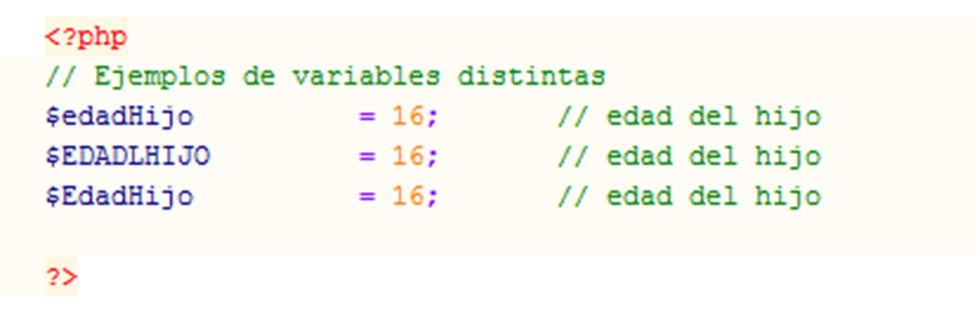
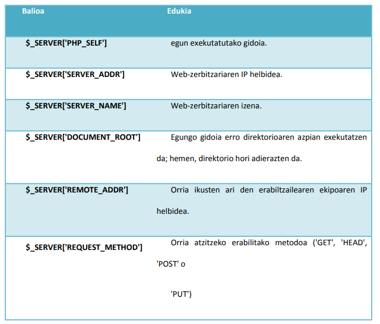
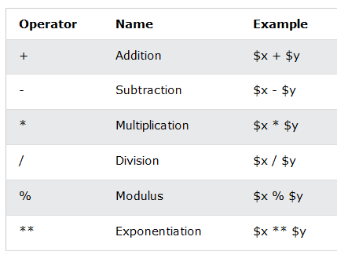
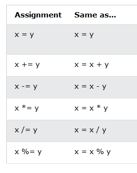
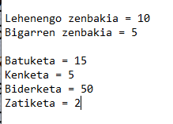
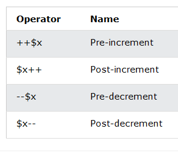
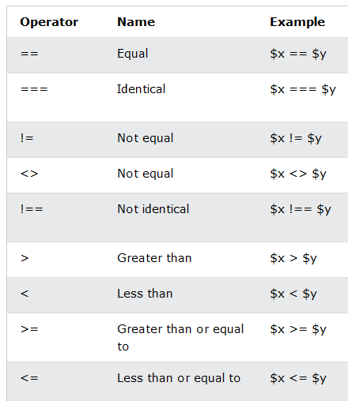
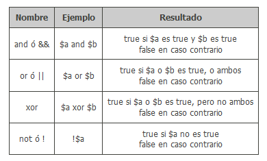
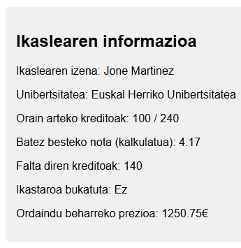

DWS 2. unitatea Aldagaiak eta adierazpenak¶
Web programazioa PHPrekin¶
Hasiera¶
PHP web-orri dinamikoak egiteko diseinatuta
<?php
// …
?>
Konfigurazioa http.conf eta php.ini fitxategietan egiten da
php.ini-n erabili daitezkeen direktiben zerrenda dago PHPren dokumentazioan:
http://php.net/manual/es/ini.core.php
Iruzkinak¶
Oso gomendagarria (ez dira ikusiko, HTMLkoak bai)
// Lerro bakarrekoa
/* ……. */ Lerro bat baino gehiago
Aldagaiak eta datu-motak¶
- Aurrean $ zeinua egongo da beti.
- Aldagaien izenak letrez hasi behar dira eta gainerako karaktereak letrak, zenbakiak edo gidoi baxua (_) izango dira.
- Ez da derrigorrezkoa aldagaiak deklaratzea.
- Ez da datu-mota zehaztu behar.
- Nahikoa da balio bat ematearekin.
$nire_aldagaia = 7;
- Emandako balioaren arabera aldagaiari datu mota bat esleituko zaio.
- Aldagaien izenak letra txikiaz
- PHPk letra txikia eta letra larria ezberdintzen ditu:

- Boolearra (boolean): Egia (
true) eta gezurra (false) dira haren balio posibleak; gainera, edozein zenbaki oso egitzat hartzen da, 0 izan ezik. - Osoa (integer): Hamartarrik gabeko edozein zenbaki. Hamartarrean, bitarrean, zortzitarrean edo hamaseitarrean adierazi daitezke.
- Erreala (float): Edozein zenbaki hamartar, notazio zientifikoan ere adierazi daitezke.
- Katea (string): Kakotx sinple edo bikoitzek mugatutako karaktere-multzoa.
-
Null: Datu mota berezia; aldagaia baliorik gabekoa dela adierazten du.
-
Mota ezberdinetako aldagaiekin eragiketa bat egiten baldin bada, guztiak mota komunera bihurtuko dira:
$nire_osokoa = 3;
$nire_erreala = 2.3;
$emaitza = $nire_osokoa + $nire-erreala;
// $emaitza aldagaia erreal motakoa da.
Bihurketak behartu egin daitezke:
$nire_osokoa = 3;
$nire_erreala = 2.3;
$emaitza = $nire_osokoa + (int) $nire_erreala;
// $nire_erreala aldagaia osoko bihurtzen da (2 baliora) batu baino lehen.
// $emaitza aldagaia osokoa da (5 balioa izango du).
Ariketekin hasi aurretik…..¶
Echo¶
Mezuak pantailan idazteko agindua da.
echo "<p>Hau da erakutsiko dugun mezua.</p>";
Aldagai bat erakutsi ahal izateko:
echo "<p>X aldagaiaren balioa $x da.</p>"; // (Interpolacion)
echo "<p>X aldagaiaren balioa ". $x . " da.</p>"; // (Concatenación)
Ariketa 1
- Eginda dut
Sortu aldagai Integer bat eta beste bat erreala eta euren batura egin eta erakutsi pantailan. Horrelako zeozer agertu beharko litzateke:
<p>X aldagaiaren balioa 5 da.</p>
<p>Y aldagaiaren balioa 2.5 da.</p>
<p>X+Y= 7.5 </p>
Ariketa 2
- Eginda dut
Sortu bi aldagai, bat izen batekin eta beste bat adinarekin eta hurrengo testua erakutsi pantailan: Kaixo, ni XXXX naiz eta XX urte ditut. Ongi etorriak!!
Aldagaiak erabiltzeko eremua¶
- Edozein tokitan erabili ditzakegu.
- Ez bada existitzen, erabiltzen den lehenengo aldian lekua erreserbatzen zaio.
- Funtzio baten barruan erabiltzen baldin badugu estreinakoz, funtzio barruan lokala da.
- Kanpoan ere erabili nahi izanez gero
globalhitza erabili behar da. - Funtzio barruan erabiltzen diren aldagaiak sortu eta ezabatu egiten dira funtzioa deitzen zaion bakoitzean; aldagaiaren balioa mantendu ahal izateko
statichitza erabili behar da.
static $a;
globalhitza barik funtzioaren barruan $a ez legoke definiturik eta Warning aterako litzateke programan….
<?php
$a = 5;
function froga (){
global $a;
$b = $a;
print "a aldagaiaren balioa da $a eta b aldagairena $b";
}
froga ();
?>
staticaldagai estatikoak deklaratutako sententzia berean hasieratu behar dira, horrela funtzioa deitzen zaion lehenengo aldian bakarrik hasieratuko da..
<?php
function froga (){
static $a = 0;
$a++;
// $a aldagaia funtzioari deitzen zaion bakoitzean handitzen da
}
froga ();
?>
PHPko aldagai bereziak¶
PHPk baditu hainbat predefinitutako aldagai edozein eremutik erabili daitezkeenak; hori dela eta, aldagai superglobal izena dute; ez duzu ezta global ere erabili behar haiek atzitzeko. Aldagai horietako bakoitza array-a da, eta array horrek balio-multzoa dauka. https://www.php.net/manual/es/reserved.variables.php

<?php
// $_GET adibidea
echo "URL parametroa: " . $_GET['parametroa'];
// $_POST adibidea
echo "Formularioko datuak: " . $_POST['izena'];
// $_SERVER adibidea
echo "Zure IP helbidea: " . $_SERVER['REMOTE_ADDR'];
?>
Konstanteak¶
define (const PHP 5.3.0-tik aurrera) funtzioarekin konstanteak definitu ditzakegu, konstanteak identifikadoreak dira eta beraien balioa ez da programa exekutatzen ari den bitartean aldatzen.
- Letra larriz idatzi ohi dira.
- Integer, float, string, boolean eta null balioak izan ditzakete.
<?php
define ("KONSTANTEA","Kaixo Mundua!! Zelan zaude?");
print KONSTANTEA;
?>
Ala ere, gaur egun const-en erabiltzea gomendatzen da.
<?php
const KONSTANTEA_2 = 'Hau beste modu bat da';
print KONSTANTEA_2 ;
?>
Adierazpenak eta eragileak¶
https://www.php.net/manual/en/language.operators.php
Eragiketa matematikoak¶

Esleitzeko operadoreak¶

Ariketa 3
- Eginda dut
Sortu bi aldagai ezberdin eta euren arteko batuketa, kenketa, biderketa eta zatiketa egin eta pantailan erakutsi. Gorde eragiketa bakoitzeko emaitza aldagai ezberdinetan, $batuketa, $kenketa etab…..
Horretarako html estruktura baten barruan egin.

Gehitzeko eta kentzeko¶

<?php
$a = 5;
$b = ++$a;
print "a aldagaiaren balioa da $a eta b aldagaiarena $b \n" ;
$a = 5;
$b = $a++;
print "a aldagaiaren balioa da $a eta b aldagaiarena $b \n" ;
?>
Zein balio izango dute $a eta $b aldagaiek kasu bakoitzean? Egin froga zuek eta ariketa 4 moduan gorde.
<?php
$a = 5;
$b = 1;
$b -= $a;
print "a aldagaiaren balioa da $a eta b aldagaiarena $b \n" ;
$a = 5;
$b = 1;
$b += $a;
?>
Zein balio izango dute $a eta $b aldagaiek kasu bakoitzean?
Konparazio-eragileak¶

Operadore logikoak¶

Kate operadorak¶
<?php
$a = "Kaixo ";
$b = $a . "Mundua!"; // orain $b aldagaiak "Kaixo mundua! Balioa izango du"
$a = "Kaixo ";
$a .= "Mundua!"; // orain $a aldagaiak "Kaixo mundua! Balioa izango du"
?>
Ariketa 4
- Eginda dut
Ariketa hau egiteko, HTML formatuan informazioa erakutsi beharrezkoa da. Horretarako, lehenengo php kodea idatziko dugu eta gero HTML-an txertatu.
-
Sortu hurrengo konstanteak
constedodefine()erabiliz:UNIBERTSITATEA→ "Euskal Herriko Unibertsitatea"GRADU_KREDITOAK→ 240IKASTAROA_PREZIOA→ 1250.75
-
Sortu aldagai hauek:
$ikasle_izena→ zure izena$orain_arte_kreditoak→ 45 (integer)$batez_besteko_nota→ 7.8 (float)$ikastaro_bukatua→ false (boolean)
-
Erakutsi pantailan informazio hau HTML formatuan:
html
<h2>Ikaslearen informazioa</h2>
<p>Ikaslearen izena: [IKASLE_IZENA]</p>
<p>Unibertsitatea: [UNIBERTSITATEA]</p>
<p>Orain arteko kreditoak: [ORAIN_ARKTE_KREDITOAK] / [GRADU_KREDITOAK]</p>
<p>Batez besteko nota: [BATEZ_BESTEKO_NOTA]</p>
<p>Ikastaroa bukatuta: [BAI/EZ]</p>
<p>Ordaindu beharreko prezioa: [IKASTAROA_PREZIOA]€</p>

Batez besteko nota ateratzeko: (orain_arte_kreditoak / GRADU_KREDITOAK) * 10
Laguntza: Boolean balioak testuan erakusteko:
php
echo $ikastaro_bukatua ? "Bai" : "Ez";